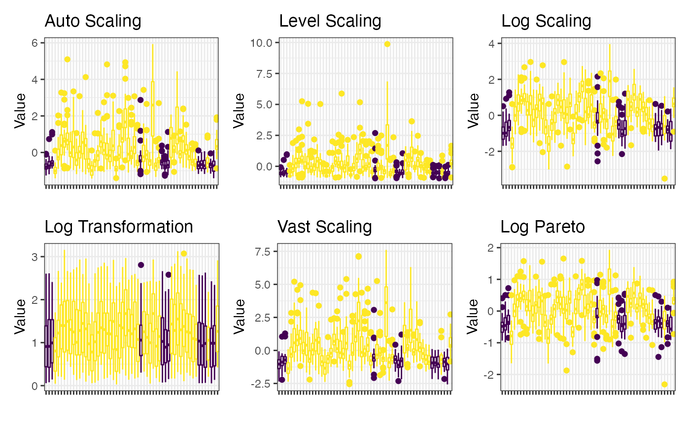
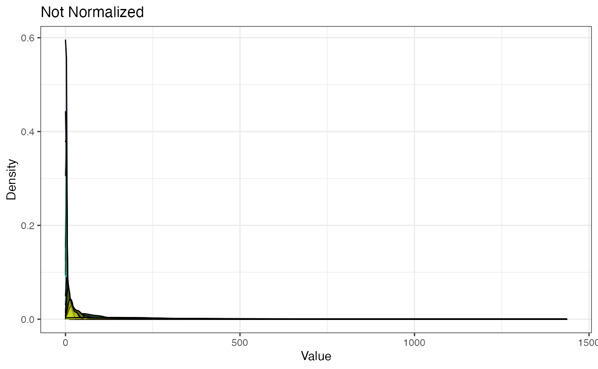
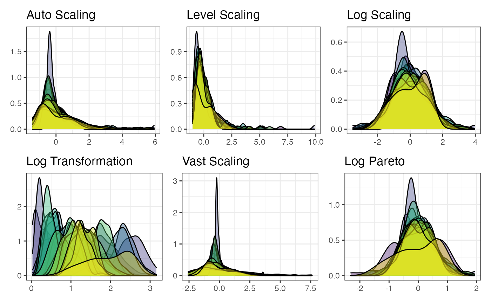

POMA Normalization Methods
Pol Castellano-Escuder
University of Barcelona, Spain.polcaes@gmail.com
29 octubre 2020
Source:vignettes/POMA-normalization.Rmd
POMA-normalization.RmdCompiled date: 2020-10-29
Last edited: 2020-08-01
License: GPL-3
Installation
Run the following code to install the Bioconductor version of package.
# install.packages("BiocManager") BiocManager::install("POMA")
Load Data and Imputation
Let’s create a cleaned MSnSet object from example st000336 data to explore the normalization effects.
# load example data
data("st000336")
# imputation using the default method KNN
example_data <- st000336 %>% PomaImpute()
example_data
> MSnSet (storageMode: lockedEnvironment)
> assayData: 30 features, 57 samples
> element names: exprs
> protocolData: none
> phenoData
> sampleNames: DMD004.1.U02 DMD005.1.U02 ... DMD173.1.U02 (57 total)
> varLabels: Group steroids
> varMetadata: labelDescription
> featureData: none
> experimentData: use 'experimentData(object)'
> Annotation:
> - - - Processing information - - -
> Imputed (knn): Thu Oct 29 11:44:08 2020
> MSnbase version: 2.16.0Normalization
Here we will evaluate ALL normalization methods that POMA offers on the same MSnSet object to compare them (Berg et al. 2006).
none <- PomaNorm(example_data, method = "none") auto_scaling <- PomaNorm(example_data, method = "auto_scaling") level_scaling <- PomaNorm(example_data, method = "level_scaling") log_scaling <- PomaNorm(example_data, method = "log_scaling") log_transformation <- PomaNorm(example_data, method = "log_transformation") vast_scaling <- PomaNorm(example_data, method = "vast_scaling") log_pareto <- PomaNorm(example_data, method = "log_pareto")
Normalization effect on data dimensions
When we check for the dimension of the data after normalization we can see that ALL methods have the same effect on data dimension. PomaNorm only change the data dimension when the data have features that only have zeros and when the data have features with 0 variance. Only in these two cases PomaNorm will remove features of the data, changing the data dimensions.
dim(Biobase::exprs(none))
> [1] 30 57
dim(Biobase::exprs(auto_scaling))
> [1] 30 57
dim(Biobase::exprs(level_scaling))
> [1] 30 57
dim(Biobase::exprs(log_scaling))
> [1] 30 57
dim(Biobase::exprs(log_transformation))
> [1] 30 57
dim(Biobase::exprs(vast_scaling))
> [1] 30 57
dim(Biobase::exprs(log_pareto))
> [1] 30 57Normalization effect on samples
Here we can evaluate the different normalization effects on samples (Berg et al. 2006).
a <- PomaBoxplots(none, group = "samples", jitter = FALSE) + ggtitle("Not Normalized") b <- PomaBoxplots(auto_scaling, group = "samples", jitter = FALSE) + ggtitle("Auto Scaling") + theme(axis.text.x = element_blank(), legend.position = "none") c <- PomaBoxplots(level_scaling, group = "samples", jitter = FALSE) + ggtitle("Level Scaling") + theme(axis.text.x = element_blank(), legend.position = "none") d <- PomaBoxplots(log_scaling, group = "samples", jitter = FALSE) + ggtitle("Log Scaling") + theme(axis.text.x = element_blank(), legend.position = "none") e <- PomaBoxplots(log_transformation, group = "samples", jitter = FALSE) + ggtitle("Log Transformation") + theme(axis.text.x = element_blank(), legend.position = "none") f <- PomaBoxplots(vast_scaling, group = "samples", jitter = FALSE) + ggtitle("Vast Scaling") + theme(axis.text.x = element_blank(), legend.position = "none") g <- PomaBoxplots(log_pareto, group = "samples", jitter = FALSE) + ggtitle("Log Pareto") + theme(axis.text.x = element_blank(), legend.position = "none") a

(b + c + d) / (e + f + g)

Normalization effect on features
Here we can evaluate the different normalization effects on features.
h <- PomaDensity(none, group = "features") + ggtitle("Not Normalized") i <- PomaDensity(auto_scaling, group = "features") + ggtitle("Auto Scaling") + theme(axis.title.x = element_blank(), axis.title.y = element_blank()) j <- PomaDensity(level_scaling, group = "features") + ggtitle("Level Scaling") + theme(axis.title.x = element_blank(), axis.title.y = element_blank()) k <- PomaDensity(log_scaling, group = "features") + ggtitle("Log Scaling") + theme(axis.title.x = element_blank(), axis.title.y = element_blank()) l <- PomaDensity(log_transformation, group = "features") + ggtitle("Log Transformation") + theme(axis.title.x = element_blank(), axis.title.y = element_blank()) m <- PomaDensity(vast_scaling, group = "features") + ggtitle("Vast Scaling") + theme(axis.title.x = element_blank(), axis.title.y = element_blank()) n <- PomaDensity(log_pareto, group = "features") + ggtitle("Log Pareto") + theme(axis.title.x = element_blank(), axis.title.y = element_blank()) h

(i + j + k) / (l + m + n)

Session Information
sessionInfo()
> R version 4.0.2 (2020-06-22)
> Platform: x86_64-apple-darwin17.0 (64-bit)
> Running under: macOS Catalina 10.15.7
>
> Matrix products: default
> BLAS: /Library/Frameworks/R.framework/Versions/4.0/Resources/lib/libRblas.dylib
> LAPACK: /Library/Frameworks/R.framework/Versions/4.0/Resources/lib/libRlapack.dylib
>
> locale:
> [1] es_ES.UTF-8/es_ES.UTF-8/es_ES.UTF-8/C/es_ES.UTF-8/es_ES.UTF-8
>
> attached base packages:
> [1] parallel stats graphics grDevices utils datasets methods
> [8] base
>
> other attached packages:
> [1] patchwork_1.0.1 ggplot2_3.3.2 Biobase_2.50.0
> [4] BiocGenerics_0.36.0 POMA_1.0.0 BiocStyle_2.18.0
>
> loaded via a namespace (and not attached):
> [1] backports_1.1.10 circlize_0.4.10 systemfonts_0.3.2
> [4] plyr_1.8.6 igraph_1.2.6 lazyeval_0.2.2
> [7] splines_4.0.2 gmp_0.6-1 BiocParallel_1.24.0
> [10] digest_0.6.27 foreach_1.5.1 htmltools_0.5.0
> [13] viridis_0.5.1 magrittr_1.5 memoise_1.1.0
> [16] cluster_2.1.0 doParallel_1.0.16 limma_3.46.0
> [19] recipes_0.1.14 ComplexHeatmap_2.6.0 graphlayouts_0.7.1
> [22] gower_0.2.2 matrixStats_0.57.0 rARPACK_0.11-0
> [25] pkgdown_1.6.1 colorspace_1.4-1 ggrepel_0.8.2
> [28] textshaping_0.1.2 xfun_0.18 dplyr_1.0.2
> [31] jsonlite_1.7.1 crayon_1.3.4 impute_1.64.0
> [34] survival_3.2-7 iterators_1.0.13 glue_1.4.2
> [37] polyclip_1.10-0 gtable_0.3.0 ipred_0.9-9
> [40] zlibbioc_1.36.0 GetoptLong_1.0.4 RankProd_3.16.0
> [43] shape_1.4.5 Rmpfr_0.8-1 scales_1.1.1
> [46] vsn_3.58.0 Rcpp_1.0.5 mzR_2.24.0
> [49] viridisLite_0.3.0 clue_0.3-57 preprocessCore_1.52.0
> [52] clisymbols_1.2.0 stats4_4.0.2 lava_1.6.8
> [55] prodlim_2019.11.13 glmnet_4.0-2 httr_1.4.2
> [58] htmlwidgets_1.5.2 RColorBrewer_1.1-2 ellipsis_0.3.1
> [61] pkgconfig_2.0.3 XML_3.99-0.5 farver_2.0.3
> [64] nnet_7.3-14 caret_6.0-86 labeling_0.4.2
> [67] tidyselect_1.1.0 rlang_0.4.8 reshape2_1.4.4
> [70] ggcorrplot_0.1.3 munsell_0.5.0 tools_4.0.2
> [73] generics_0.0.2 broom_0.7.2 evaluate_0.14
> [76] stringr_1.4.0 mzID_1.28.0 yaml_2.2.1
> [79] ragg_0.4.0 ModelMetrics_1.2.2.2 knitr_1.30
> [82] fs_1.5.0 tidygraph_1.2.0 randomForest_4.6-14
> [85] purrr_0.3.4 ggraph_2.0.3 ncdf4_1.17
> [88] glasso_1.11 nlme_3.1-150 compiler_4.0.2
> [91] rstudioapi_0.11 plotly_4.9.2.1 png_0.1-7
> [94] e1071_1.7-4 affyio_1.60.0 tibble_3.0.4
> [97] tweenr_1.0.1 stringi_1.5.3 RSpectra_0.16-0
> [100] desc_1.2.0 MSnbase_2.16.0 lattice_0.20-41
> [103] ProtGenerics_1.22.0 Matrix_1.2-18 permute_0.9-5
> [106] vegan_2.5-6 vctrs_0.3.4 pillar_1.4.6
> [109] lifecycle_0.2.0 BiocManager_1.30.10 MALDIquant_1.19.3
> [112] GlobalOptions_0.1.2 data.table_1.13.2 corpcor_1.6.9
> [115] R6_2.5.0 pcaMethods_1.82.0 affy_1.68.0
> [118] bookdown_0.21 gridExtra_2.3 IRanges_2.24.0
> [121] codetools_0.2-16 MASS_7.3-53 assertthat_0.2.1
> [124] rprojroot_1.3-2 rjson_0.2.20 withr_2.3.0
> [127] S4Vectors_0.28.0 mgcv_1.8-33 mixOmics_6.14.0
> [130] grid_4.0.2 rpart_4.1-15 timeDate_3043.102
> [133] tidyr_1.1.2 class_7.3-17 rmarkdown_2.5
> [136] Cairo_1.5-12.2 ggforce_0.3.2 pROC_1.16.2
> [139] lubridate_1.7.9 ellipse_0.4.2